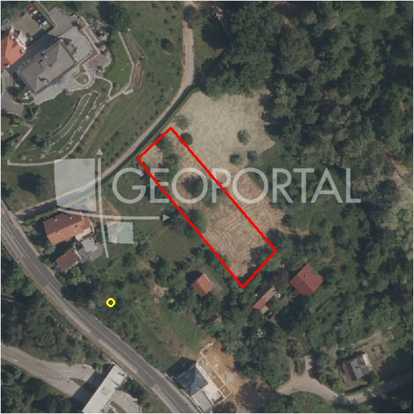

#35769 · Pantovčak, atraktivno građevinsko zemljište 1.760 m²
Pantovčak, Gornji Grad - Medveščak, Grad Zagreb · zemljiste · njuskalo · status active · oglas ↗
Ocjena
- Score
- 61 rule 61 · LLM – · 12.09.2026.
- RLV
- 603.000 € (335 €/m²) · ratio 1,26
- Ukupna investicija
- 1,33 M€
- GBP
- 400 m²
- Feedback
- –
- CRM
- –
Oglas
- Cijena
- 480.000 € (273 €/m²)
- Površina
- 1.760 m² · DKP 1.801 m² (odstupanje 2,3 %)
- Prodavatelj
- agencija · Eurovilla d.o.o.
- Prvi put
- 11.09.2026. · zadnje 11.09.2026. · 0 d na tržištu
Povijest cijene
| Datum | Cijena |
|---|---|
| 11.09.2026. | 480.000 € |
Flagovi
zone_uncertainty zona nije pregledana (reviewed: false) (−5)gbp_iz_oglasa GBP preuzet iz oglasa (gbp_claim)
llm_pending LLM ekstrakcija/ocjena nedostupna
Komponente score-a
| rlv | {'gbp': 400.0, 'kis': 1.2, 'nkp': 328.0, 'noi': None, 'rlv': 602770.4347826089, 'ratio': 1.2557717391304353, 'value': None, 'phases': 1, 'profile': 'zagreb_visestambeno', 'gdv_neto': 1705600.0, 'cost_soft': 26400.0, 'gdv_bruto': 2132000.0, 'kis_known': True, 'total_inv': 1325200.0, 'cost_build': 660000.0, 'cost_other': 130000.0, 'cost_sales': 63960.0, 'demolition': False, 'gbp_source': 'min(kis,gbp_claim)', 'rlv_per_m2': 334.64936419198807, 'parcel_area': 1801.2, 'parcelation': False, 'roi_on_cost': 0.23878659824932086, 'profit_at_ask': 316440.0, 'cost_demolition': 0.0, 'total_inv_phase': 1325200.0, 'parcel_area_effective': 1801.2, 'sale_price_per_m2_nkp': 6500.0} |
| hard | [] |
| info | ['gbp_iz_oglasa', 'llm_pending'] |
| rubric | {'permits': {'max': 10.0, 'detail': {'permit': 'none'}, 'points': 0.0}, 'physical': {'max': 10.0, 'detail': {'slope_pct': 16.82, 'road_access': 'yes', 'slope_points': 2.636}, 'points': 5.64}, 'liquidity': {'max': 10.0, 'detail': {'n_cuts': 0, 'points_cut': 0.0, 'points_days': 0.03333333333333333, 'seller_type': 'agencija', 'points_fresh': 1.0, 'price_cut_pct': None, 'days_on_market': 1, 'points_private': 0}, 'points': 1.03}, 'rlv_ratio': {'max': 40.0, 'detail': {'rlv': 602770, 'ratio': 1.256, 'asking_price': 480000.0}, 'points': 32.67}, 'zone_quality': {'max': 15.0, 'detail': {'no_upu': True, 'source': 'gis', 'zone_class': 'stambeno', 'zone_ideal': True, 'gp_uredjeni': True}, 'points': 12.0}, 'price_vs_benchmark': {'max': 15.0, 'detail': {'source': 'auto:Gornji grad - Medveščak', 'deviation': 0.642, 'ask_eur_m2': 273, 'benchmark_eur_m2': 761.02}, 'points': 15.0}} |
| weights | {'llm': 0.4, 'rule': 0.6, 'model': 0.0} |
| penalties | {'zone_uncertainty': 5} |
| raw_score | 66,3 |
| rlv_notes | [] |
| flag_notes | {'max_gbp': 2161, 'total_inv': 1325200, 'zone_code': 'S', 'zone_class': 'stambeno', 'zone_source': 'gis', 'zone_reviewed': False, 'commercial_pct': 0.0, 'commercial_source': 'zone_rule'} |
| caps_applied | [] |
GIS
- Čestica
- k.o. 335258, k.č. 3896 (pin_buffer, 0,84); k.o. 335258, k.č. 3897 (pin_buffer, 0,80); k.o. 335258, k.č. 3898 (pin_buffer, 0,74)
- Zona
- S (stambeno) · NIJE pregledana
- kig / kis / katnost
- 0,30 / 1,20 / Po+P+2+Pk
- GP / UPU
- uredjeni · UPU ne
- Pristup / nagib
- yes · 16,8 % (max 25,3 %)
- More
- –
- Zaštite
- Natura ne · zaštićeno ne · kulturno dobro ne
- Zgrade na čestici
- 0 %
- Match
- 0,84
Karta
Ortofoto (DOF)

RLV kalkulacija — pretpostavke
| gbp | {'value': 400.0, 'source': 'min(kis,gbp_claim)'} |
| kis | {'value': 1.2, 'source': 'gis'} |
| soft_pct | {'value': 0.04, 'source': 'profil'} |
| nkp_ratio | {'value': 0.82, 'source': 'profil'} |
| cost_other | {'value': 130000.0, 'source': 'profil: doprinosi+uređenje po m² GBP, financiranje+rezerva % gradnje'} |
| parcel_area | {'value': 1801.2, 'source': 'dkp'} |
| asking_price | {'value': 480000.0, 'source': 'oglas'} |
| margin_on_cost | {'value': 0.15, 'source': 'profil'} |
| build_cost_per_m2_gbp | {'value': 1650.0, 'source': 'profil'} |
| sale_price_per_m2_nkp | {'value': 6500.0, 'source': 'benchmark:override:Pantovčak'} |
| transfer_tax_and_acquisition | {'value': 0.06, 'source': 'profil'} |
Ekstrakcija iz oglasa
| gbp_claim | 400.0 |
| utilities | ['voda', 'plin', 'telekomunikacije'] |
Benchmarks mikrolokacije
| Vrsta | Vrijednost | n | Od | Izvor |
|---|---|---|---|---|
| newbuild_sale_eur_m2_nkp | 6.500 | – | 12.09.2026. | override |
Opis oglasa
Atraktivno građevinsko zemljište u neposrednoj blizini Pantovčaka površine 1760 m2, fronte 26m, (u građevinskom pojasu 600m2) sa postojećom kućom sa svim priključcima voda, stuja i plin. Na zemljištu se također nalaze dva pomoćna objekta koja su legalizirana. Mogućnost gradnje maksimalno 400m2 bruto površine. Ostale informacije na upit. Za ovu nekretninu kontaktirajte agenticu na broj telefona +385991925788. Više na Eurovilla.hr, ID: 557899. Direktan link: https://eurovilla.hr/nekretnina/pantovcak-atraktivno-gradevinsko-zemljiste-1-760-m2/557899/.